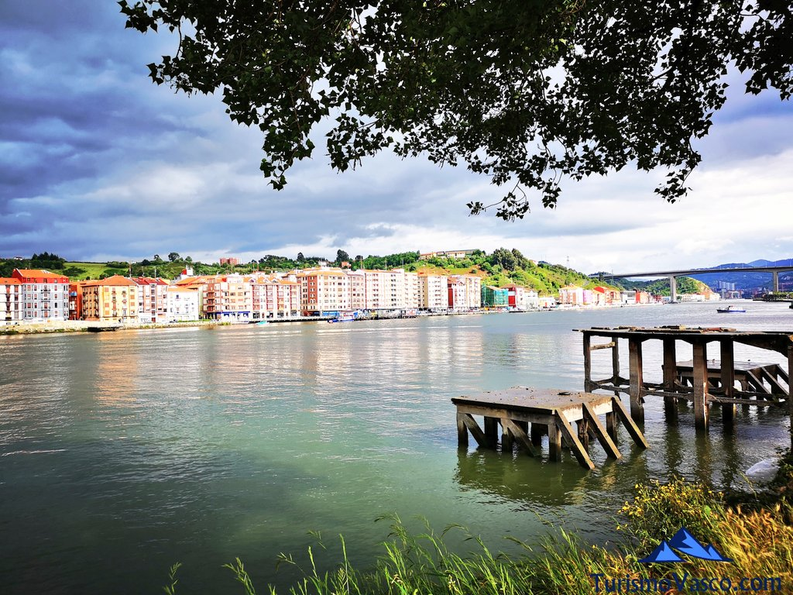

Nací en Barakaldo, un pueblo obrero cerca de Bilbao y a orillas del Nervión. Viví allí mis primeros 8 años, hasta que nos mudamos a la otra margen de la ría.
Biografía:
Después nos vinimos a vivir a Algorta, un barrio de Getxo, tradicionalmente pesquero y con unas fiestas muy conocidas: Portu zaharreko jaiak! (Las fiestas del puerto viejo).
Como curiosidad, en estas fiestas allá por los años 70, se inventó el Kalimotxo!!